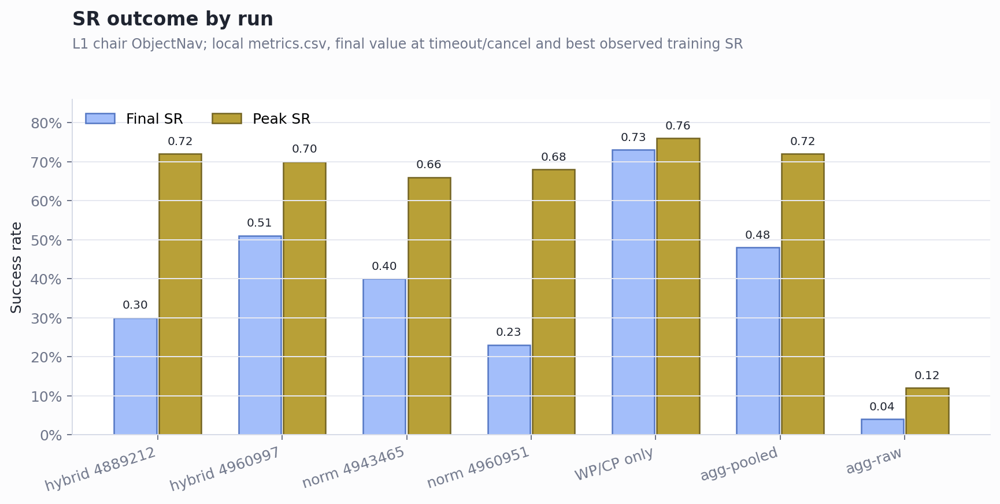
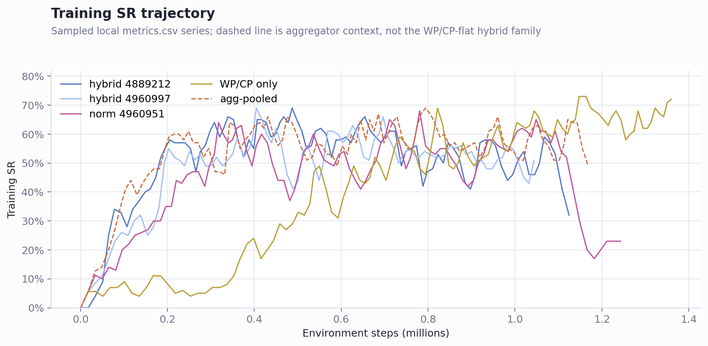
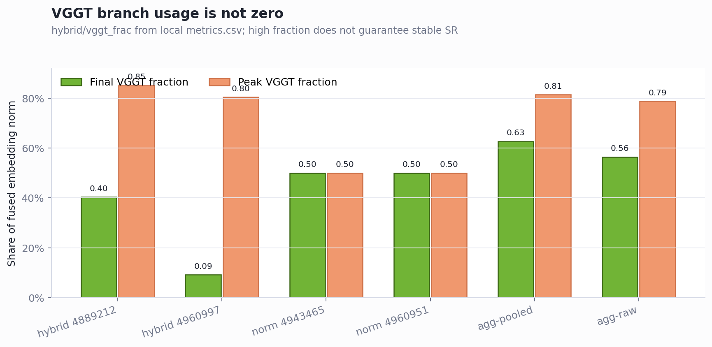

Hybrid RGB + WP/CP Flatten: Stand und nächste Schritte
Fokussierte Auswertung der Frage, ob der Hybrid bereits mit Bild plus 37x37-World-Points/Camera-Pose als MLP-Zweig gelaufen ist.
Executive Summary
- Ja, der gesuchte Hybrid-Lauf existiert. Die relevante Familie ist
hybrid_v1/habitat-l1-hybrid: RGB geht durch eine CNN-Branch, die 37x37-World-Points plus Camera-Pose werden als 4116-D WP/CP-Vektor durch eine MLP-Branch verarbeitet. - Das Modell kann damit lernen, aber die Ergebnisse sind nicht stabil genug. Die zwei direkten Hybrid-WP/CP-Läufe erreichen Peaks von 0.72 und 0.70 SR, fallen am Ende aber auf 0.30 beziehungsweise 0.51 zurück, weil sie vor 2M Steps in den 48h-Limit laufen.
- Die WP/CP-only Kontrolle ist aktuell stärker als der Hybrid. Der 37x37-WP/CP-only Lauf erreicht final 0.73 SR und peak 0.76 SR; der Hybrid ist also kein Beleg, dass Bild + WP/CP schon besser ist.
- Der nächste Bearbeitungspunkt ist Stabilität und faire Laufzeit, nicht ein weiterer roher Aggregator-Versuch. Die Branch-Diagnostik zeigt, dass VGGT/WP-CP nicht einfach tot ist; trotzdem braucht die These einen parity-clean Resume/No-Video/No-Val Vergleich oder eine gezielte Gate-/Fusion-Ablation.
Der gesuchte Hybrid ist RGB plus 37x37-WP/CP, nicht Aggregator
Gesuchte Familie
hybrid / hybrid_v1 benutzt den Replay-Input [rgb_norm 12288 | wp_cp 4116]. Die WP/CP-Seite ist der 37x37-World-Point-Grid-Readout plus 9D Camera-Pose, also genau die flatten-Point-Cloud-Frage.
Nicht dieselbe Frage
hybrid_agg_pooled und hybrid_agg_raw sind ebenfalls Hybrid-Läufe, aber die VGGT-Seite sind Aggregator-Tokens. Sie sind als Kontext nützlich, sollten aber nicht als Antwort auf die WP/CP-flatten-Frage gezählt werden.

Der Hybrid lernt schnell, verliert aber nach dem Peak
Die Kurven zeigen keinen Lern-Defekt bei 37x37-WP/CP im Hybrid. Beide direkten Hybrid-WP/CP-Läufe steigen früh in den 0.6-0.7 SR-Bereich. Das Problem ist, dass die Kurve danach nicht stabil bleibt und die Jobs vor 2M Steps beendet werden.
Das ist wichtig für die Thesis-Interpretation: Wir können nicht sagen, dass der Hybrid nicht lernen kann. Wir können aber auch noch nicht sagen, dass der Hybrid besser ist. Der faire Claim ist aktuell: RGB + WP/CP kann lernen, aber die bisherige Fusion ist instabiler als der WP/CP-only Lauf.
Experimentvorschlag: Checkpoint-Fork nach dem ersten Peak
Die sauberste Analyse ist ein Fork vom gleichen Hybrid-Checkpoint. Starte von run-4960997/checkpoints/step_000400000.pkl oder run-4889212/checkpoints/step_000400000.pkl, also direkt um den ersten SR-Peak, und führe kurze Fortsetzungen mit identischem Seed, gleicher Replay-Kapazität, gleicher Step-Zahl und deaktiviertem In-Run-Video/Eval aus. Danach wird offline aus den gespeicherten Checkpoints evaluiert.
| Arm | Was wird isoliert? | Interpretation |
|---|---|---|
A. Control Resumehybrid unverändert |
Reproduziert der fortgesetzte Lauf den SR-Abfall? | Wenn der Drop wiederkommt, ist er kein Zufall aus dem ursprünglichen Jobende. |
| B. VGGT/WP-CP eingefroren Gate oder Branch-Skala ab Checkpoint fixieren |
Driftet die Fusion nach dem Peak in eine schlechte Gewichtung? | Wenn dieser Arm stabil bleibt, liegt der Fehler wahrscheinlich in Gate/Skalierung/Fusion. |
| C. WP/CP-Maskierung WP/CP-Branch beim Weitertrainieren oder Eval auf null setzen |
Ist der WP/CP-Zweig nach dem Peak hilfreich oder schädlich? | Wenn Maskierung stabiler ist, stört der 3D-Zweig die Policy; wenn sie schlechter ist, wird WP/CP genutzt, aber falsch kalibriert. |
Mindestmetriken pro Arm: metrics/sr, metrics/spl, hybrid/gate, hybrid/vggt_frac, hybrid/cnn_frac, actor entropy, value loss, reward loss und KL-Loss. Der entscheidende Test ist nicht der absolute Peak, sondern ob der Drop nach 400k-800k Steps nur im Control-Arm oder in allen Armen wiederkommt.

hybrid_agg_pooled als Kontext. Sie ist nicht Teil der WP/CP-flatten-Hybrid-Familie.Die VGGT-Branch ist nicht einfach tot
hybrid/vggt_frac wird deutlich größer als null. Beim Lauf 4889212 liegt die finale VGGT-Fraktion bei 0.40 und peak bei 0.85; beim Lauf 4960997 ist sie final niedriger, aber peak bei 0.80. Das spricht gegen die einfache Diagnose, dass der WP/CP-Zweig nie genutzt wird.
Die Interpretation ist enger: Die Branch öffnet sich, aber die Nutzung übersetzt sich nicht zuverlässig in stabile SR. Deshalb sollten die nächsten Experimente Fusion, Gate/Skalierung, Replay- und Eval-Parität prüfen, statt nur dieselbe Konfiguration länger blind neu zu starten.

Run-Inventar für die aktuelle Entscheidung
| Run | Familie | Input | Final SR | Peak SR | Status / Lesart |
|---|---|---|---|---|---|
run-4889212W&B v4y0yomr |
gesucht | hybrid, obs 16404 |
0.30 @ 1.13M | 0.72 @ 471k | Kann lernen, aber fällt nach frühem Peak zurück und endet durch Timeout. |
run-4960997W&B boi0cntv |
gesucht | hybrid, obs 16404 |
0.51 @ 1.05M | 0.70 @ 404k | Besserer Endstand als 4889212, aber weiterhin unter WP/CP-only final. |
run-4943465W&B lte3r5o4 |
gleicher Input | hybrid_norm_fixed, obs 16404 |
0.40 @ 1.03M | 0.66 @ 469k | Gleicher Input, andere Skalierung; kein stabiler Gewinn. |
run-4960951W&B b7zd8n8e |
gleicher Input | hybrid_norm_fixed, obs 16404 |
0.23 @ 1.25M | 0.68 @ 780k | Gleicher Input, aber starke spätere Instabilität. |
run-4887404W&B 70kydwei |
Kontrolle | WP/CP-only 37x37, obs 4116 | 0.73 @ 1.36M | 0.76 @ 1.16M | Aktuell stärkere Kontrolle; Hybrid muss daran gemessen werden. |
run-4892977W&B po3rx7q9 |
Kontext | hybrid_agg_pooled, obs 15360 |
0.48 @ 1.17M | 0.72 @ 792k | Guter Kontext, aber Aggregator statt WP/CP-flatten. |
run-4892978W&B 3ckqi5mc |
Kontext | hybrid_agg_raw, obs 1415168 |
0.04 @ 290k | 0.12 @ 226k | Zu groß und zu langsam; nicht als nächster Hauptpfad geeignet. |
Empfohlene nächste Schritte
- Erstelle zuerst einen parity-clean Vergleich für den Ziel-Hybrid. Nutze denselben Step-Bereich, Eval-Protokoll, Replay-Kapazität und möglichst keine Video-/Val-Overheads während des Produktionslaufs. Ziel ist nicht ein neuer Peak, sondern stabiler SR bei gleicher Laufzeitbasis.
- Vergleiche direkt gegen WP/CP-only 37x37 und CNN. Der Hybrid muss zeigen, dass RGB + WP/CP mehr bringt als WP/CP allein oder CNN allein. Aktuell ist WP/CP-only final stärker als der Hybrid.
- Untersuche Fusion statt Input-Größe. Die Branch wird genutzt, aber nicht stabil in SR übersetzt. Sinnvolle Varianten sind Gate-Initialisierung, normierte Branch-Skalierung, Branch-Dropout oder ein kleiner Adapter nach der Fusion.
- Schiebe raw Aggregator zurück.
hybrid_agg_rawist als direkter 2M-Pfad zu teuer und schlecht skaliert. Wenn Aggregator weiterverfolgt wird, dann pooled/projiziert oder mit Token-Reduktion.
Offene Fragen für die Bearbeitung
- Ist der spätere SR-Abfall ein echtes Policy-/World-Model-Problem oder ein Artefakt aus Eval-/Video-/Walltime-Kadenz?
- Bleibt der Hybrid bei Seed-Wiederholung instabil, oder ist der Unterschied zwischen 4889212 und 4960997 bereits Seed-/Run-Varianz?
- Welche Branch-Metrik korreliert wirklich mit SR:
hybrid/vggt_frac, Gate, Branch-Norm, oder etwas nach dem RSSM?
Caveats und Quellenlage
Die Schlussfolgerung ist lauf- und protokollabhängig. Alle genannten Produktionsläufe enden vor 2M Steps durch Timeout oder Abbruch; finale SR ist also nicht konvergente finale Performance. Die Werte stammen aus lokalen metrics.csv-Dateien und lokalen MANIFEST.json-Dateien, nicht aus einem frischen W&B-API-Refresh.
- Hybrid-Architektur: CNN(RGB) + MLP(WP/CP)
- WP/CP Flatten-Erklärung
- Warum 37x37 World-Points
- Breite 2M-/Runtime-Auswertung
output/runs/r2dreamer-curriculum-l1-hybrid/run-4889212/metrics.csvoutput/runs/r2dreamer-curriculum-l1-hybrid/run-4960997/metrics.csvoutput/runs/r2dreamer-curriculum-l1-hybrid-norm-fixed/run-4960951/metrics.csvoutput/r2dreamer-curriculum-l1-vggt-wp-cp-mlp/run-4887404/metrics.csv